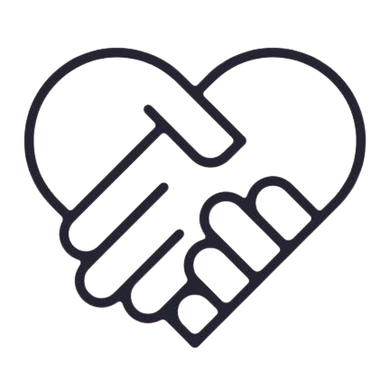

Raih Pahala yang Tidak Akan Pernah Terputus dengan Wakaf Al-Quran
"Sebaik-baik kamu adalah yang mempelajari Al-Quran dan mengajarkannya" HR. Bukhari
Raih Pahala dari penghafal Quran, mari hadiahkan mereka mushaf yang layak
Saya ingin WakafTentang

Yayasan Al-Qolam Cirebon adalah badan hukum yang bergerak di bidang Filantropi dan senantiasa eksis dalam pelaksanaan wakaf al-quran ini. Hal ini pun sesuai dengan visi misi kami, yaitu:
Visi
Menjadi sentra pendidikan dan keterampilan islam berkarakter, yang peduli akan problematika sosial serta berwawasan kemajuan ekonomi menuju kemandirian melalui wasilah penerapan Teknologi dan Digitalisasi Informasi sehingga mampu memaksimalkan potensi ekonomi umat demi tercapainya Islam Rahmatan Lil Alamin
Misi
- Mencetak Generasi Rabbani melalui pendidikan Al Quran dan pendidikan keterampilan, yang sesuai tuntunan Rasulullah SAW berlandaskan pada Quran dan Sunnah
- Membekali umat menuju kemandirian Ekonomi melalui Ekosistem Pendidikan Tauhid Quran dan Entrepreneurship
- Mendukung penuh upaya syiar dan dakwah para dai serta pemuda pemudi islam generasi penerus sehingga fokus menjalankan tugas dan kewajiban mendidik umat
Keutamaan Mewakafkan Al-Quran
-
Melestarikan Al-Quran
Melalui wakaf Al Quran, kitab suci ini dapat dilestarikan dari kemungkinan kerusakan, hilang, atau terlantar.
-
Menyebarkan Ilmu
Wakaf Al Quran berarti menyediakan sarana dan prasarana bagi pendidikan Islam. Dengan demikian, ilmu pengetahuan yang terkandung di dalam Al Quran dapat disampaikan dan dipelajari secara lebih luas dan mendalam.
-

Pembangunan Pendidikan
Wakaf Al Quran memungkinkan pembangunan institusi pendidikan yang berfokus pada pengajaran ilmu agama. Hal ini membantu mencetak generasi yang cerdas, berakhlak mulia, dan cinta akan Al-Quran.
-

Amal Jariyah
Pelaksanaan wakaf kitab Al Quran membawa kebaikan yang berkesinambungan. Menjadi amal jariyah bagi pemberi wakaf. Meskipun ia telah tiada, pahala dari setiap orang yang mengaji Al Quran akan terus mengalir kepadanya.
"Di antara pahala amal mukmin yang akan tetap mengalir setelah kematiannya adalah ilmu yang dia sebarkan, anak shaleh yang ia tinggalkan, mushaf yang ia wariskan, masjid yang dia bangun, rumah untuk ibnu sabil (orang yang di perjalanan), atau sungai yang dia alirkan, sedekah hartanya yang ia keluarkan ketika masih sehat dan kuat, yang masih dimanfaatkan setelah dia meninggal." HR. Ibnu Majah
Mengapa Wakaf Al-Quran di
Yayasan Al-Qolam Cirebon?
-
Legalitas Resmi, Memiliki Badan Hukum dan Terpercaya
-
Namamu tertulis di dalam mushaf
-
Berkontribusi mengembangkan pendidikan Islam
-
Berkontribusi meramaikan masjid dan mushola
-
Dapat Bersilaturahmi dengan Pengelola dan Pengurus Yayasan Al Qolam Cirebon
.jpg)
.jpg)
.jpg)
.jpg)
.jpg)
.jpg)
.jpg)
.jpg)
.jpg)
Raih Kebaikan dengan Membantu
Santri
Penghafal Al-Quran
"Apabila anak adam (manusia) telah meninggal dunia, maka terputuslah amalnya darinya, kecuali tiga perkara, yaitu sedekah jariyah (sedekah yang pahalanya terus mengalir), ilmu yang bermanfaat, atau anak saleh yang selalu mendoakannya." HR Muslim no. 1631
Yuk, Berikan Mushaf untuk Memperkuat Semangat Mereka Mengkhatamkan Al-Quran
Wakaf Sekarang